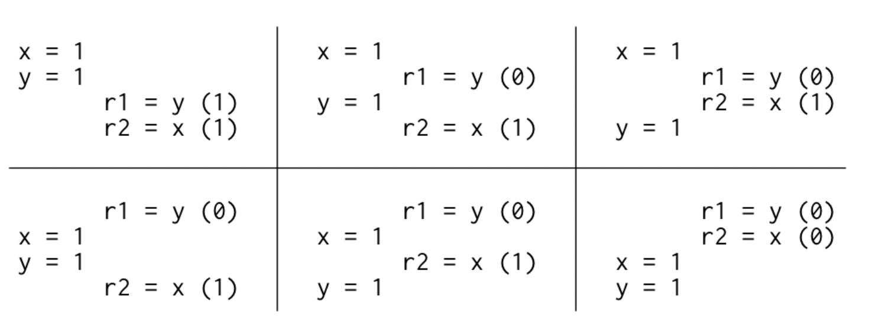
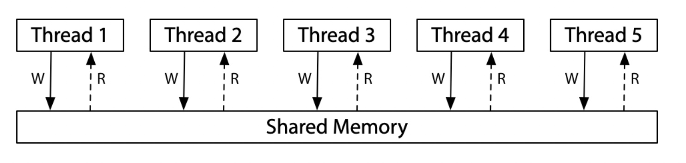
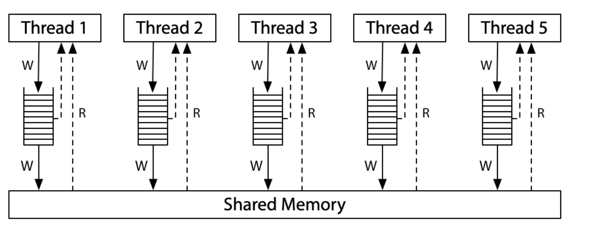
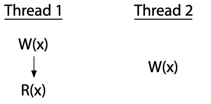
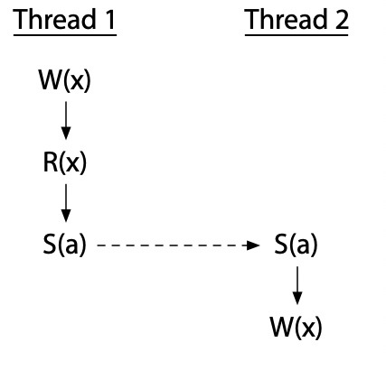

Go 并发模型：Piplines 和 Cancellation
上网冲浪的时候偶然发现了一篇 Golang 官网 blog，在此随意记录一下阅读的重点。注：由于文章是 2014 年写的，所以里面一些技巧并不是很“现代”，但是整体的思路（编程、写作）都是很好的。
并发问题几乎是编程领域最难的问题了，Go 所提出的并发模型最大优势就是，用简单并发模型抽象，将复杂的事情隐藏在了后面。让像我这种平庸的程序员也有一种自己能够驾驭并发的错觉。
记得在 MIT 的操作系统课程里面就有提到过这个并发模型
什么是 Pipeline？
Pipeline 是由多个 stage 组成的，每个 stage 通过 channel 前后连接，形成了管道。在每个 stage 中，都有执行着同样函数的 goroutine，这些 goroutine 的工作通常是：
- 从上游 inbound channel 接受数据；
- 用收到的数据执行一些逻辑，通常会产生一个新的数据；
- 向下游 outbound channel 发送数据
Russ Cox 内存模型博客
概述：软、硬件之间会出现一些执行顺序一致性偏离的问题。一部分是因为硬件的缓存加速架构导致，一部分是因为CPU的重排导致。而且，在多核CPU出现之后，这个问题更加突出。所以，软、硬件之间就需要一个协议：保证二者遵守同样的顺序一致性策略。那就是DRF-SC。
顺序一致性
首先假设程序运行是sequentially consistent的，多核之间只会出现交替执行的情况。
Litmus Test: Message Passing
Can this program see r1 = 1, r2 = 0?
// Thread 1 // Thread 2
x = 1 r1 = y
y = 1 r2 = x
对于这个程序，只会出现6种交替执行的结果：

在sequentially consistent的硬件上，不会出现r1=1, r2=0的结果。
sequentially consistent的一个思维模型：
想象所有的处理器都连接到一个共享内存上，它可以一次处理一个线程的读或者写请求。这个single-use-at-a-time的共享内存对所有的内存访问都施加了：sequentially consistent。

但是，放弃严格的sequentially consistent可以让硬件更快地执行程序，所以现代硬件在各个方面都不完全遵循sequentially consistent。
硬件对于sequentially consistent的偏离
x86 Total Store Order（x86-TSO）
现代x86系统的内存模型对应的硬件图：

处理器为写入维护了一个FIFO队列，所有的写入都先入队列。本处理器的查询，先到队列中查询。这就意味着，写入操作会优先对同一个处理器的读操作生效。对于其他的处理器，等到写入队列更新共享内存的时候，就能生效了。很关键的一点是：每个处理器都保证写入到共享内存的顺序。所以，这个模型被称为——Total Store Order。
对于这个模型，之前的litmus test还是不会出现r1=1, r2=0的结果。
Litmus Test: Message Passing
Can this program see r1 = 1, r2 = 0?
// Thread 1 // Thread 2
x = 1 r1 = y
y = 1 r2 = x
On sequentially consistent hardware: no.
On x86 (or other TSO): no.
因为写入队列保证了Thread1在y之前将x写入共享内存，然后TSO模型提供了另一个保证：Thread2在读取y的新值之前，必须先读取到x的新值。
在上面的情况中，两种模型（sequentially consistent和x86-TSO）表现是一致的。但是，在下面这个情况中，两个模型的表现是不同的：
Litmus Test: Write Queue (also called Store Buffer)
Can this program see r1 = 0, r2 = 0?
// Thread 1 // Thread 2
x = 1 y = 1
r1 = y r2 = x
On sequentially consistent hardware: no.
On x86 (or other TSO): yes!
在sequentially consistent模型中，x=1或者y=1必须有一个先发生，然后另一个线程的读操作肯定会观察到它。但是，在x86-TSO下，两个线程的写入操作可能都还在队列中，因此两个线程都读到0值。
对同步算法的影响
在德克尔算法或彼得森算法中，会使用两个同步变量来控制同步：如果一个线程没有看见另一个线程的所有写操作，线程可能会中断。
为了解决这个问题，我们需要一个更严格的内存排序。非顺序一致的硬件提供了一种被称为内存屏障的显示指令，可以用于控制排序。通过添加一个内存屏障，可以确保每个线程在开始读取之前，都会刷新它先前对内存的写入操作：
// Thread 1 // Thread 2
x = 1 y = 1
barrier barrier
r1 = y r2 = x
有了这个技术，同步算法就可以正常工作了。
内存屏障（barrier）
确保每个线程在开始读之前，都会刷新它之前对内存的写入操作。
ARM/POWER Relaxed Memory Model
弱有序和无数据竞争的顺序一致性
硬件层面的执行细节（CPU的cache和memory同步、多核之间的同步）是非常复杂的。而且不同的硬件架构，实现也不一致。
Sarita Adve和Mark Hill在他们1990年的论文“Weak Ordering – A New Definition”中正是提出了这种方法。他们把“弱有序”定义为如下。
Let a synchronization model be a set of constraints on memory accesses that specify how and when synchronization needs to be done.
同步模型是对内存访问的一组约束，这些约束指定了何时以及如何进行同步。
Hardware is weakly ordered with respect to a synchronization model if and only if it appears sequentially consistent to all software that obey the synchronization model.
硬件相对于同步模型来说是弱有序的。只有当软件遵守与硬件同样的同步模型的时候，软件与硬件之间才是顺序一致的。
由于软、硬件之间对于同步的实现差异很大。所以，为了能够尽量统一而提出了一个方案：弱有序、DRF下的顺序一致性。使得软件与硬件工程师能够有一个标准来实现同步技术。而且也让硬件工程师知道了改如何在不影响程序的行为的情况下来优化效率（重排、同步）。
DRF 无数据竞争同步模型
该模型假设，硬件具有对内存的读、写进行同步的能力。内存的读、写操作可以在同步操作之间重排，但是不能跨越它们移动（同步操作可以用来做重排的内存屏障）。
意思就是说：可以在对有数据竞争的操作之间，引入一个内存屏障，来消除这种数据竞争。硬件优化时，重排不能跨越内存屏障进行。
例如有一个这样的data-race情况：

通过引入一个同步操作，就可以消除这种data-race：

这种系统保证无数据竞争的顺序一致性的观点被缩写为DRF-SC。这就使得我们在使用高级编程语言的时候能够正确的写出多线程程序得到了保证。
高级语言的内存模型
通常CPU和编译器都会进行重排。我们通过内存屏障来保证CPU重排带来的数据竞争，通过编程语言提供的原子变量来避免编译器重排带来的数据竞争。
通过原子变量（atomic variable）或者原子操作（atomic operation）提供特殊能力，允许程序同步其线程。
编程语言内存模型规定了程序员和编译器所需的额外细节，作为他们之间的约定。上面谈到的通用特征基本上适用于所有现代语言，但直到最近，事情才收敛到一点:在21世纪初，有明显更多的变种。即使在今天，各种语言在更多的排序问题上也有显著的差异，包括:
- 原子变量们本身的排序保证是什么？
- 变量是否既可以原子访问，又可以非原子访问？
- 除了原子之外是否还有其它同步机制？
- 是否存在不同步的原子操作？
- 有数据竞争的程序有什么保证？
原子、同步
Copyright © 2015 Powered by MWeb, Theme used GitHub CSS.